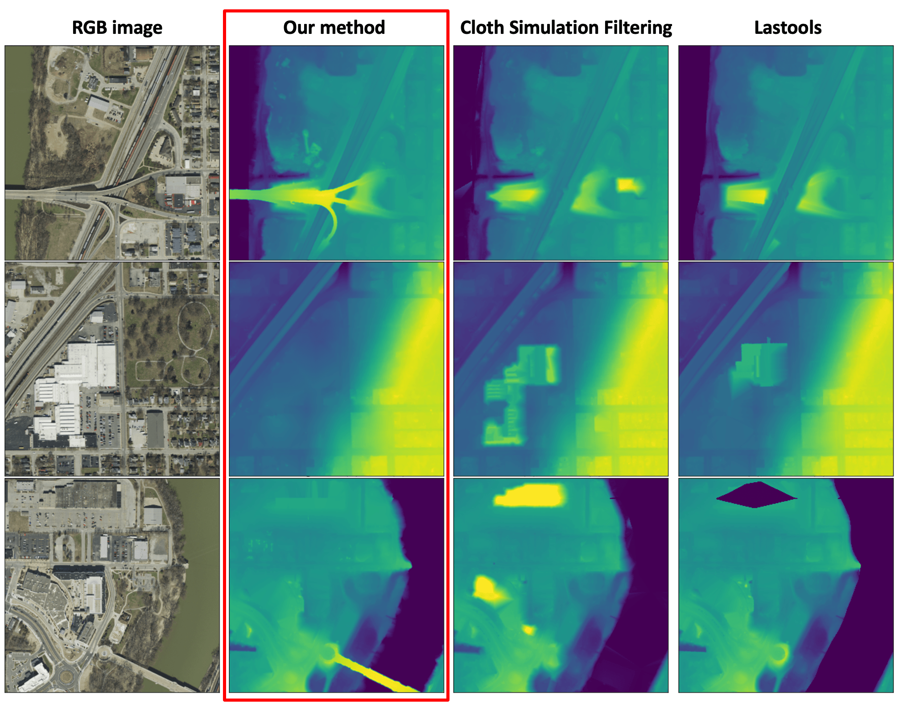
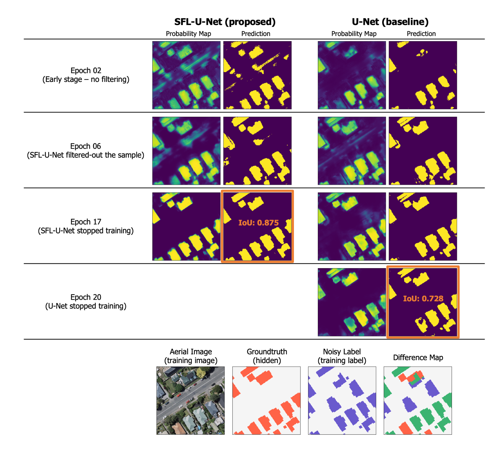

I develop algorithms for remotely sensed data and analyze cities and Earth. My primary research include 3D urban mapping and road network modeling for smart cities. Currently, I am a PhD Student in Geospatial Data Science Lab of Geomatics, Civil Engineering at Purdue University.
Interests
- Machine Learning
- Remote Sensing
- Environmental Science
- Urban Ecology
- Smart City
Research Projects
Passable area mapping for universal design
H. Song, J. Carpenter, J. Jung
Current road network mapping with remotely sensed data is primarily for extracting centerlines of major roads. However, people live in cities where various roads are intertwined. The centerlines of major roads are utterly lacking for people driving on multiple platforms and autonomous vehicles. We are working to map all the passable areas of a complex city and build a universal design to improve the accessibility.
New digital terrain model (DTM) generation method
H. Song, J. Jung
Paper is on the way!
DTM is a 3-dimensional representation of the bare earth surface excluding any objects like plants and buildings. Conventional DTM generation methods consider the "local-neighborhood" of a 3D point and classify non-ground points to create DTM. However, in complex urban environments, considering "local context" is not enough. Our method explores "global context" to create DTM and outperforms traditional methods.

Unsupervised 3D building mapping with LiDAR
H. Song, J. Jung
Paper

Cities are in a 3D space. We need to understand and analyze cities from a 3D perspective. 3D building map will not only provide richer information for downstream analyses but also it will enable new research that has not been performed properly, such as urban air mobility navigations, digital twin simulations, and other diverse smart city applications. We presents an unsupervised 3D building mapping algorithm using airborne LiDAR. Our algorithm is even more accurate than deep-learning based Microsoft Building Footprint.
Check out the following 3D building models via the web!!
* 3D New York City
* 3D Denver
* 3D New Orleans
3D building map will be kept updated for the entire US. Please email me if you want to get TIFF image (Files are HUGE!)
Weekly supervised learning with crowdsourced data
H. Song, HL. Yang, J. Jung
Paper is under review
The crowdsourced label has a great potential for deep learning. However, the low quality of labels hampers the successful learning of the deep model. In this work, we propose a self-filtered learning that enables deep models to learn effectively with low-quality OpenStreetMap labels. Our method progressively refines training samples during the training process based on the loss of training samples.

Photovoltaic (PV) power forecast with meteorological satellite
H. Song,, G. Kim, M. Kim, Y. Kim
 Paper (IEEE APPEEC)
Paper (IEEE APPEEC)
An accurate PV power forecast is important for efficient power system planning in smart cities. We proposed a deep model that integrates multi-temporal meteorological satellite images and historical PV data for short-term PV forecasting. Our framework is being used on the platform of SKT, South Korea's largest wireless carrier. Also, I am very proud to have worked as the project manager for this project. (Thanks SKT for providing the cool GIF!)
Here is another work with my colleagues that compares the significance of implementing different meteorological satellite images for PV forecast.
Patch-based Light CNN: Land cover mapping with satellite images

H. Song, Y. Kim, Y. Kim
Paper (Remote Sensing)
The land cover map is quintessential data for various urban and environmental studies. The U.S. Geological Survey (USGS & MRLC) has been mapping land cover maps of the entire US for more than 20 years. One difficulty is the ground-truth is considerably site-dependent and not pure as one pixel's resolution is 30m by 30m. Our work presents that a very simply patch-based CNN model performs better by utilizing contextual information than conventional pixel-based algorithms.
Here is another piece of extended research for boosting performance based on the sample filtering.
Academia
- Ph.D. in Civil Engieering (2020-present)
- Advisor: Dr. Jinha Jung
- M.S. Civil and Environmental Engieering (2018-2020)
- B.S. Civil and Environmental Engieering (2012-2017)
- Advisor: Dr. Yongil Kim